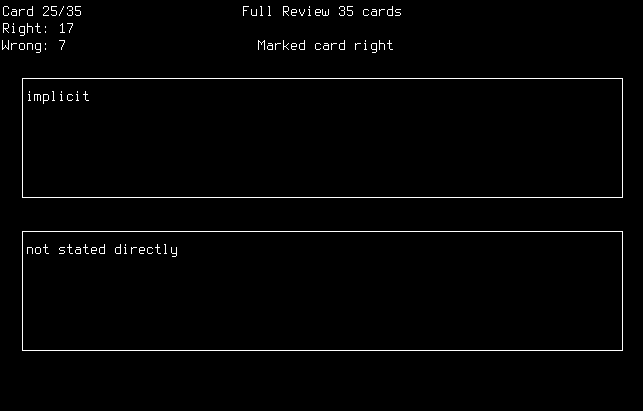

sortstudycli
sortstudycli is an index card studying tool that runs in a UNIX terminal. I programmed it in C with ncurses for displaying text.

It features:
- a simple and easy to use interface
- automatic sorting of cards into "review" and "completed" sets
- card reading in a format that's easy and fast to type
- commands for shuffling, flipping, and deleting cards
I learned a lot from making this project and I'm satisfied with how it turned out. I myself use it for studying spanish vocab.